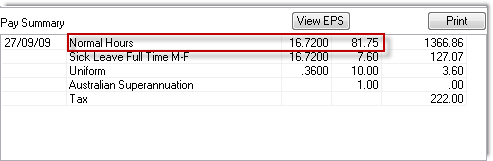
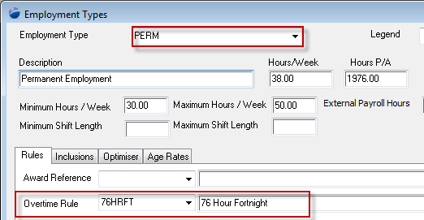
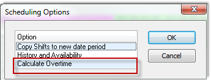
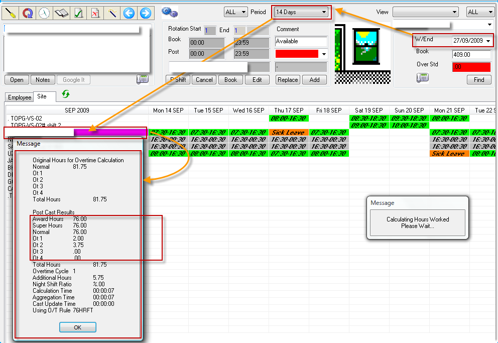
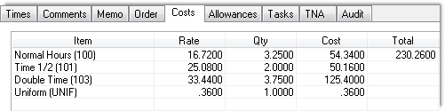
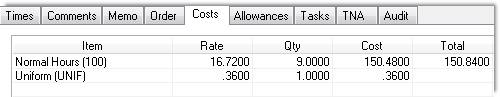

Home
Tutorial
Introduction
In our last pay run numbered V-140 three employees as listed above worked more than 76 hours but were not paid overtime – the system paid them a flat rate for all their hours. They are supposed to be paid overtime once they have completed 76 hours.
The fourth employee V-148 Bud is paid overtime on a daily basis once he has done 7.6 hours, and not after he has worked 76 hours.
Can you please explain why and provide a solution so we can rectify this.
|
Getting There:
[ SC ] –> Modules / Module Options
|
Issue
SITE: V-73 CENTRAL UNIVERSITY
employees:
V-134 FLORI - NO OVERTIME PAID
V-161 PATRICIA - NO OVERTIME PAID
V-163 GEORGE - NO OVERTIME PAID
V-148 BUD – OVERTIME PAID DAILY
In our last pay run numbered V-140 three employees as listed above worked more than 76 hours but were not paid overtime – the system paid them a flat rate for all their hours. They are supposed to be paid overtime once they have completed 76 hours.
The fourth employee V-148 Bud is paid overtime on a daily basis once he has done 7.6 hours, and not after he has worked 76 hours..
Can you please explain why and provide a solution so we can rectify this.
Top of Page
Step 1
For each of your employees, using the details on the payroll workbench confirm that the employees did indeed have more than 76 normal hours.

For each of your employees, using the Personnel Rates screen confirm their employment type. In this instance there were two employment types across the employees noted: PERM & PERM/PTIME.
For each employment type confirm that the employment type has a 76 hour rule defined, using [ SC ] –> Payroll / Parameters / Employment Types

Top of Page
Casting overtime (manually)
Select any one employee to confirm that the system is calculating the overtime rule:
Using to the Scheduling Workbench
Set the Week Ending date to the week ending date of the payroll (V-140) that the employee is included in.
Change the Period View to 14 days
Expand the Scheduling Workbench, so that you see the whole 14 days in one wide window
Select the employee on the LHS of the screen
Double click on the employee to get the following screen : 
Double click Calculate Overtime

The system will calculate the overtime and as you see in the image above, it has split the overtime at 76 hours.
Top of Page
Step 3
Looking at the above analysis, we can see that the overtime will be cast into the last shift of the fortnight, so selecting the last shift (the system will inform you that the shift has been paid & no changes are allowed - press OK to continue) in the fortnight and editing the costs tab, presents the following:

The shift itself is 9.0 hours long, and the detail above notes, that the first 2.00 hours are at Time 1/2 and the balance of 3.75 hours is at Double Time.
Top of Page
Step 4
Double click inside the shift to recost it (as a standalone shift), shows you the details of the shift prior to casting of overtime.

You can see the clear difference of the whole shift of 9.0 hours at Normal Hours.
Top of Page
Explanation
The cast overtime process [ Nav ] –> Scheduling / Cast Overtime should be run prior to the running of the payroll, ensuring that no shift changes are done once the cast overtime is run and the payroll processed.
If a shift has had the cast overtime process run against it, and then you make any changes to the shift, the system will recost the shift and remove the overtime casting.
Top of Page
See Also
 Correcting the pay Correcting the pay
PowerForce Controls
|